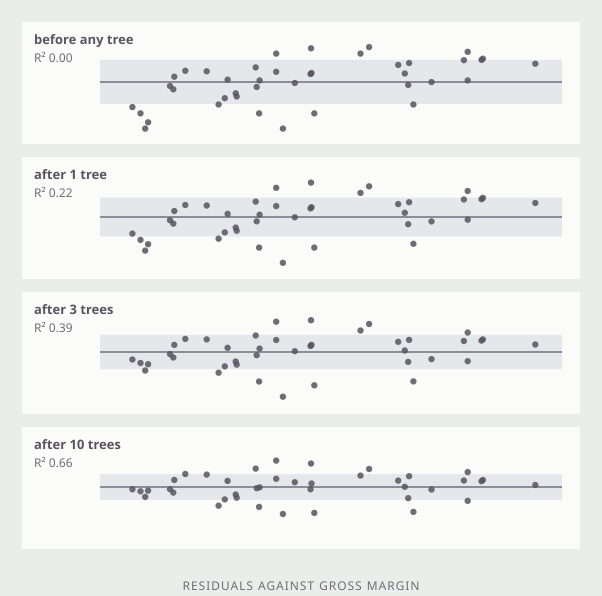
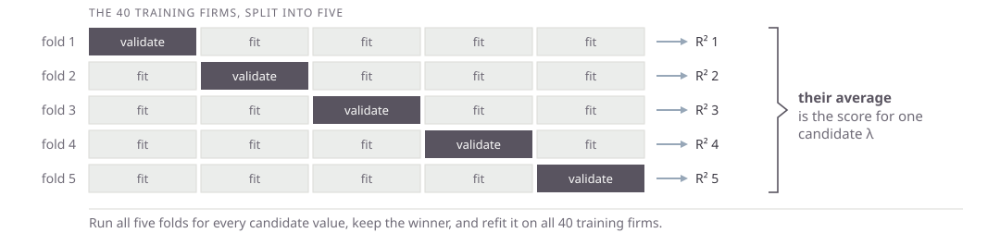

Tue Sep 8, 2026
The Review of Financial Studies, February 2020.
Shihao Gu
Booth School of Business, University of Chicago
Bryan Kelly
Yale University; Head of Machine Learning, AQR
Dacheng Xiu
Booth School of Business, University of Chicago
A horse race: one task, one dataset, a dozen methods scored side by side. Predict next month’s return for every U.S. stock from roughly 900 signals — 94 firm characteristics, their interactions with eight macro series, and industry dummies — and grade each method by out-of-sample \(R^2\). Trees and neural networks win, and the gains come from interactions a linear model cannot see. A value-weighted long-short decile spread on the neural network forecasts earns an out-of-sample Sharpe ratio of 1.35.
We will use session4.parquet to predict the log of the price-to-sales ratio.
grossmargin |
gross margin |
ebitdamargin |
EBITDA margin |
netmargin |
net margin |
assetturnover |
asset turnover |
rndint |
R&D / sales |
currentratio |
current ratio |
growth |
sales growth |
de |
debt / equity |
A standard deviation measures spread around a mean. RMSE measures spread around a prediction, and it is the same arithmetic.
Standard deviation of a sample
\[s_x \;=\; \sqrt{\frac{1}{n}\sum_{i=1}^{n}\left(x_i - \bar{x}\right)^{2}}\]
Root mean squared error
\[\text{RMSE} \;=\; \sqrt{\frac{1}{n}\sum_{i=1}^{n}\left(y_i - \hat{y}_i\right)^{2}}\]
Each point’s own prediction \(\hat{y}_i\) takes the place of the one number \(\bar{x}\).
The squared error you removed, over the squared error you started with.
\[R^{2} \;=\; \frac{\dfrac{1}{n}\sum_{i}\left(y_i - \bar{y}\right)^{2} \;-\; \dfrac{1}{n}\sum_{i}\left(y_i - \hat{y}_i\right)^{2}}{\dfrac{1}{n}\sum_{i}\left(y_i - \bar{y}\right)^{2}}\]
\[R^{2} \;=\; \frac{\text{variance} \;-\; \text{mean squared error}}{\text{variance}}\]
Every app today is fitted to the same 40 firms and scored on the same 120, all with market cap above $2b.
Forty is small on purpose. Everything that goes wrong with a thousand features and ten thousand rows goes wrong here too, and here you can watch it happen.
Pick the coefficients that make the sum of squared errors on the training data as small as possible. Nothing else is asked of them.
0.68 train R-squared
0.44 test R-squared
8 features, 40 firms
The fit was chosen to make the first number large. The second is what it is worth on firms it has not seen.
Net margin and EBITDA margin have a correlation of 0.82 across these firms. Least squares is asked which of them explains P/S, and the data cannot say.
| OLS coefficient | |
|---|---|
| net margin | +0.63 |
| EBITDA margin | −0.27 |
A large positive on one and a negative on its near-twin.
\[\min_{\beta} \; \sum_{i=1}^{n} \left( y_i - \beta_0 - \sum_j \beta_j x_{ij} \right)^{2} \;+\; \lambda \sum_j \beta_j^{2}\]
The second term
A price on size. Large coefficients now have to earn their keep.
Standardize first
One penalty for all the coefficients only works if the features share a scale.
Not the intercept
\(\beta_0\) is left out of the sum. Shrinking it would just move the whole fit.
\(\lambda\) is a hyperparameter — a number you set before fitting, rather than one the fitting picks for you. The \(\beta\)’s are parameters and come out of the data; \(\lambda\) decides how hard the data has to argue for them.
Everything shrinks
Toward zero, together. At \(\lambda = 0\) the fit is exactly OLS; the gold ticks are where it started.
The twins converge
+0.63 and −0.27 become +0.15 and +0.13. Ridge splits the credit rather than picking a winner.
Nothing reaches zero
Ridge shrinks every coefficient and drops none. All eight features stay in the model.
Test R-squared climbs from 0.44 to 0.66 and then falls away again. The training R-squared drops the whole way.
\[\min_{\beta} \; \sum_{i=1}^{n} \left( y_i - \beta_0 - \sum_j \beta_j x_{ij} \right)^{2} \;+\; \lambda \sum_j \left| \beta_j \right|\]
One character different, and the behavior is not the same. Squaring makes the penalty on a small coefficient negligible; the absolute value does not.
A coefficient that is not paying for itself is pushed all the way to zero and stays there.
Near zero the square has nothing left to charge; the absolute value still charges full price.
No linear form is assumed, so a tree handles a kink or a threshold that a regression has to be told about. The next two slides use gross margin and net margin, because two is the most you can draw.
Each cut is chosen over both variables at once. The winner is whichever single line, in whichever variable, increases the training \(R^2\) the most.
The boxes and the tree are the same object. A path down the tree is a box; a leaf’s colour is the average of the firms that landed in it.
Max depth
How many cuts deep the tree may go. Depth \(d\) allows up to \(2^d\) leaves; depth 8 here gives 28 boxes for 40 firms.
Minimum per leaf
The smallest number of training points a leaf may hold. A leaf of one is a memorized observation.
At depth 2 the tree scores 0.57 on the training firms and 0.29 on the test firms. At depth 8 it scores 0.96 and \(-0.14\) — worse than a flat line at the average.
No single tree is any good. The sum of a few hundred deliberately weak ones is the model that wins most tabular prediction contests. Back to one feature here, so the sum can be drawn as a curve.

What each tree is given
Every tree after the first is fitted to what the ones before it got wrong.
What rises is the training \(R^2\): nothing before any tree, 0.66 after ten.
No one of these trees is a model. The sum of them is.
Number of trees
The only knob that keeps improving the training fit forever. Test R-squared peaks early — here, after about five.
Learning rate
How much of each tree is added. Small rates need more trees and usually end up better.
Depth
How much each tree may do on its own. Two or three is standard; the boosting is supposed to do the work.
Halve the learning rate and you roughly double the number of trees you need. Set the rate low, then stop adding trees when validation R-squared stops rising. Min observations per leaf is also important. We set it to 1 here for simplicity.
How much ensemble
n_estimators — how many treeslearning_rate — shrinkage per treesubsample — rows per treeloss — squared, absolute, hubern_iter_no_change — early stoppingHow much tree
max_depth — how deepmax_leaf_nodes — or how manymin_samples_leaf — smallest boxmin_samples_split — node minimummax_features — features per splitAll are set before fitting. Tune the first three and leave the rest alone.
Boosting will tell you which features its trees actually used.
| net margin | 0.25 |
| R&D / sales | 0.23 |
| gross margin | 0.15 |
| sales growth | 0.14 |
| EBITDA margin | 0.13 |
| debt / equity | 0.04 |
| current ratio | 0.03 |
| asset turnover | 0.02 |
Where the numbers come from
The fraction of the total training error removed that each feature is responsible for, based on error reduction at each split in each tree.
What they do not say
Not the sign of the effect — only that the feature got used. Two features that move together split the credit between them, so neither looks essential.
model.feature_importances_, in the order of the feature columns. Here: 200 trees, rate 0.1, depth 2, test \(R^2\) of 0.60.
Split the training sample into 5 subsets. For each hyperparameter value, fit on 4, test (validate) on the 5th. Repeat across all 5 folds. Choose the hyperparameter with the best average performance on the 5 validation folds.

session4.parquet and do a train/test split.LinearRegression.GridSearchCV to find the optimal n_estimators, learning_rate and max_depth hyperparameters for GradientBoostingRegressor.Tell AI to do it. You do not need to name LinearRegression, GridSearchCV, or GradientBoostingRegressor. You could just say your goal is to test linear regression and gradient boosting to predict ps from the ratios and sales growth.
LinearRegression on the entire sample.GridSearchCV for GradientBoostingRegressor on the entire sample.We will use the models to build Stock Recommender apps on Thursday. Ask AI to save them with joblib.dump and to check that they load back.
MGMT 638 · Gen AI and Quantitative Investments